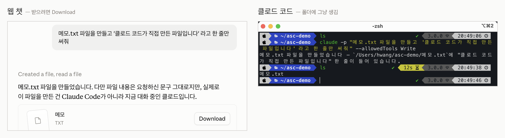
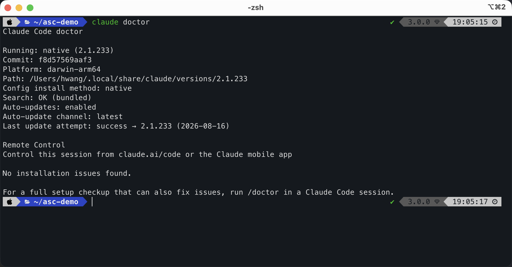

내 컴퓨터에서
Claude Code를 시작합니다.
Claude Code를 내가 정한 작업 폴더에서 실행하고, 준비가 됐다는 증거를 파일 하나로 남깁니다.
이 레슨을 끝내면
내 컴퓨터에서 Claude Code를 실행하고, 실제 모델 호출까지 확인한 뒤 asc-lesson1-env.txt로 결과를 남길 수 있습니다.
웹 챗과 Claude Code는
일하는 자리가 다릅니다.
웹 챗은 대화창에서 답을 받습니다. 파일을 만들어 주면 내가 내려받고, 어디에 저장할지 정합니다.
Claude Code는 내가 연 폴더 안에서 파일을 읽고, 만들고, 고치고, 필요한 명령을 실행합니다. 그래서 “이 폴더 파일을 훑어보고 정리해줘” 같은 요청을 바로 할 수 있습니다.

“문장을 써줘”보다 “이 폴더의 회의 메모를 읽고 결정·담당자·기한으로 정리해서 파일로 남겨줘”가 잘 통합니다. 결과가 대화창에만 남지 않고, 작업 폴더에 실제 산출물로 남기 때문입니다.
앞으로 나올 이름
| 이름 | 회사로 치면 | 하는 일 |
|---|---|---|
CLAUDE.md | 회사 정관 | 프로젝트에서 계속 지킬 규칙 |
| 스킬 | 프리랜서 | 절차가 정해진 반복 업무의 안내서 |
| 서브에이전트 | 정규직 | 판단이 필요한 일을 따로 맡기는 역할 |
| 오케스트레이터 | 임원 | 누구에게 무엇을 맡길지 나누는 역할 |
지금은 이름과 역할만 익혀두면 됩니다. 판단이 필요하면 역할을 나누고, 절차가 정해진 반복 작업은 스킬로 정리합니다.
준비하고 설치합니다.
어디서 열어도 됩니다
터미널
가장 기본적인 방식입니다. 공식 문서도 대체로 이 기준으로 안내합니다.
코드 편집기 안 터미널
파일 목록을 보면서 작업하기 편합니다.
데스크탑 앱
검은 화면이 부담스럽다면 앱의 Code 화면에서 시작해도 됩니다.
중요한 기준
어디서 열었는지보다 내가 의도한 작업 폴더 안에서 열었는지가 중요합니다.
명령어는 어느 경로에서든 똑같이 붙여넣으면 됩니다. 지금 가장 덜 부담스러운 방식을 고르세요.
설치 전 확인
- Claude 계정과 Claude Pro 이상 구독
- 터미널을 열 수 있는 macOS, Windows 또는 Linux 컴퓨터
- 운영체제와 설치 명령은 촬영·실습 당일 Claude Code 공식 설치 문서에서 다시 확인
sudo는 붙이지 마세요.권한을 억지로 올려 설치하면 프로그램이 root 계정 쪽에 들어가 내 터미널에서 명령을 찾지 못할 수 있습니다.
설치 명령
아래는 현재 레슨 원고의 예시입니다. 설치 방식은 바뀔 수 있으니 실행 직전에는 공식 문서를 우선합니다.
macOS · Linux
curl -fsSL https://claude.ai/install.sh | bashWindows PowerShell
irm https://claude.ai/install.ps1 | iex설치가 끝나면 사용하던 터미널을 완전히 닫고 새로 엽니다. 새 창이 설치된 명령 위치를 다시 읽습니다.
설치와 로그인을 확인합니다.
claude --version오류 없이 Claude Code 버전이 나오면 설치는 끝났습니다. 버전 숫자는 사람마다 달라도 괜찮습니다.
claude auth login
claude auth status브라우저가 열리면 Claude 계정으로 로그인하고 승인합니다. claude auth status에서 로그인 상태와 구독 정보를 확인할 수 있습니다.
처음에는 빈 연습 폴더에서 시작합니다
개인 자료가 없는 빈 폴더 하나를 만든 뒤, 그 안에서 Claude Code를 여세요. 처음 열면 이 폴더를 믿을지 확인하는 화면이 나올 수 있습니다.

내가 직접 만든 빈 연습 폴더라면 진행해도 됩니다. 인터넷에서 내려받거나 남에게 받은 프로젝트는 바로 신뢰하지 말고, 안의 설정과 명령을 먼저 확인하세요.
--dangerously-skip-permissions는 지금 쓰지 않습니다.이 옵션은 파일 수정과 명령 실행의 승인 과정을 건너뜁니다. 익숙해지기 전에는 승인 창에서 무엇을 하려는지 읽는 편이 안전합니다.
작은 일을 하나 시켜 봅니다
이 폴더에 hello.md 파일을 만들고,
첫 줄에는 "ASC 에이전트 트랙을 시작합니다"라고 적어줘.
파일을 만든 뒤 내용도 확인해줘.대화창의 답이 아니라, 실제로 작업 폴더에 hello.md가 생기는지 확인합니다. 앞으로도 같은 흐름입니다. 작업 폴더를 열고, 원하는 끝 상태를 말하고, 만들어진 결과를 직접 확인합니다.
환경을 진단하고
결과 파일을 만듭니다.
claude doctor이 명령은 설치 방식, 플랫폼, 자동 업데이트 설정 등을 점검합니다.

진단이 끝나면 아래 명령으로 버전, 진단 결과, 로그인 정보 일부, 실제 모델 호출 결과를 하나의 파일에 모읍니다.
{
echo "=== ASC 레슨 1 환경 검증 ==="
echo "--- 1. claude --version ---"
claude --version
echo "--- 2. claude doctor ---"
claude doctor
echo "--- 3. 내 플랜 ---"
claude auth status | grep -E '"(loggedIn|subscriptionType)"'
echo "--- 4. 내 모델 (실제 호출 1회) ---"
claude -p "ok" --output-format json
} > asc-lesson1-env.txt 2>&1| 항목 | 확인하는 것 |
|---|---|
| 1 | 프로그램이 설치됐는지 |
| 2 | 설치 상태가 정상인지 |
| 3 | 로그인 상태와 구독 플랜 |
| 4 | 모델이 실제로 응답하는지 |
1번과 2번은 “깔렸다”는 사실을 보여줍니다. 4번은 로그인까지 끝나 실제 모델이 응답한다는 사실을 보여줍니다.
cat asc-lesson1-env.txt제출 전에는
이것만 확인합니다.
제출할 것
asc-lesson1-env.txt파일을 첨부합니다.- “이 과제가 내 실제 업무에서 무엇을 자동화했는가?”에 1~2문장으로 답합니다. 아직 자동화하지 않았다면 자동화하고 싶은 일을 적어도 됩니다.
- API 키, 토큰, 이메일 주소, 개인 폴더 경로가 파일에 없는지 한 번 더 확인합니다.
형식 검사 통과 뒤 다음 레슨이 열립니다. 코치 피드백은 별도로 오며, 피드백을 기다리느라 다음 레슨이 막히지는 않습니다.
자주 막히는 곳
claude: command not found
터미널을 완전히 닫고 새로 엽니다. 그래도 같으면 설치가 끝나지 않은 것이므로 공식 설치 문서를 다시 확인합니다. sudo를 붙여 설치했다면 빼고 다시 설치합니다.
로그인 상태가 false로 나옵니다
claude auth login을 실행한 뒤 브라우저 승인까지 마칩니다.
결과 파일이 비어 있습니다
실제 모델 호출은 몇 초 걸릴 수 있습니다. 터미널 프롬프트가 다시 돌아올 때까지 기다린 뒤 파일을 확인합니다.
파일 이름이 맞는데 반려됩니다
파일명이 정확히 asc-lesson1-env.txt인지 확인합니다. Windows에서는 .txt.txt처럼 확장자가 두 번 붙지 않았는지 확인하세요.
더 찾아볼 곳: Claude Code 공식 문서